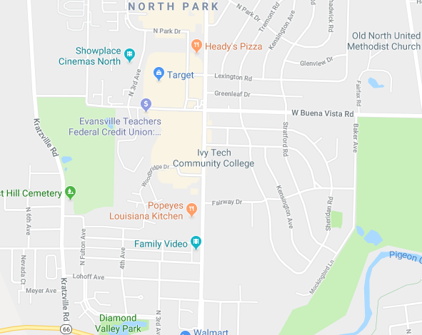

Studio Ghibli
Studio GhibliThe world wide web is a great place! It has connected people across the globe, allowed for online stores that will deliver items straight to your door, it enables news and knowledge to be shared instantaneously. However, it can also be a dangerous place. There are many who use the web with ill intent, hoping to catch users unaware and cause them harm - be it by damaging their computer, gaining access to their files, or learning their personal information and using it for their own gain. Much of this can be prevented with some basic knowledge of what to look for.
Don't believe me? Let me tell you just a bit about you:
Web Browser:
Version:
Operating System:
Network Status:
Screen Width: px
Screen Height: px
This could be your location if I wanted to pay Google:

Scary, right? And that's just the tip of the iceberg. But don't worry! There are many people who dedicate their time to educating the masses about how to safely use the web. Here are just a few examples: